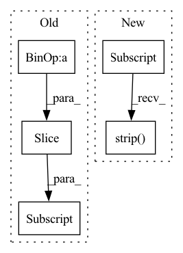

Pattern ID :17231

Before Change
image_path = osp.join(self._dataset_dir,
WiderFacePath.SUBSET_DIR + self._subset,
WiderFacePath.IMAGES_DIR, image[:-1])
item_id = image[:-(len(WiderFacePath.IMAGE_EXT) + 1)]
annotations = []
if "/" in item_id:
label_name = item_id.split("/")[0]
if "--" in label_name:
After Change
// a heuristic for paths
for line_idx in line_ids:
image_path = lines[line_idx].strip()
item_id = osp.splitext(image_path)[0]
image_path = osp.join(self._dataset_dir,
WiderFacePath.SUBSET_DIR + self._subset,
In pattern: SUPERPATTERN
Frequency: 3
Non-data size: 5
Instances
Fragment ID: 57365491
Project Name: openvinotoolkit/datumaro
Commit Name: 22728f23e850b31562cdb5da80cd34722a091574
Time: 2021-03-19
Author: maxim.zhiltsov@intel.com
File Name: datumaro/plugins/widerface_format.py
M Class Name: WiderFaceExtractor
N Class Name: WiderFaceExtractor
M Method Name: _load_items(2)
N Method Name: _load_items(2)
M Parent Class: SourceExtractor
N Parent Class: SourceExtractor
M File Name: datumaro/plugins/widerface_format.py
N File Name: datumaro/plugins/widerface_format.py
M Start Line: 68
M End Line: 115
N Start Line: 69
N End Line: 100
'>
Before Change
for i in range(len(original_string)-kmer):
sentence += original_string[i:i+kmer] + " "
sentence += original_string[-kmer:]
return sentence
def get_kmer_sequence(original_string, kmer=1):
After Change
sentence += original_string[i:i+kmer] + " "
i += stride
return sentence[:-1].strip("\"")
def get_kmer_sequence(original_string, kmer=1):
'>
Fragment ID: 57365494
Project Name: jerryji1993/dnabert
Commit Name: bd07d05b817cccc02409cd9db7dfc662d06afbcd
Time: 2021-06-16
Author: zzh760998379@163.com
File Name: examples/data_process_template/process_pretrain_data.py
M Class Name: AnonimousClass
N Class Name: AnonimousClass
M Method Name: get_kmer_sentence(3)
N Method Name: get_kmer_sentence(2)
M Parent Class:
N Parent Class:
M File Name: examples/data_process_template/process_pretrain_data.py
N File Name: examples/data_process_template/process_pretrain_data.py
M Start Line: 53
M End Line: 60
N Start Line: 49
N End Line: 60
'>
Before Change
for i in range(len(original_string)-kmer):
sentence += original_string[i:i+kmer] + " "
sentence += original_string[-kmer:]
return sentence
def get_kmer_sequence(original_string, kmer=1):
After Change
sentence += original_string[i:i+kmer] + " "
i += stride
return sentence[:-1].strip("\"")
def get_kmer_sequence(original_string, kmer=1):
'>
Fragment ID: 57365492
Project Name: jerryji1993/dnabert
Commit Name: 7fb3a3f1ce711bef5ec4f9965c652ceb5d41ff88
Time: 2021-07-13
Author: Zhihan Zhou
File Name: examples/data_process_template/process_pretrain_data.py
M Class Name: AnonimousClass
N Class Name: AnonimousClass
M Method Name: get_kmer_sentence(3)
N Method Name: get_kmer_sentence(2)
M Parent Class:
N Parent Class:
M File Name: examples/data_process_template/process_pretrain_data.py
N File Name: examples/data_process_template/process_pretrain_data.py
M Start Line: 53
M End Line: 60
N Start Line: 49
N End Line: 60